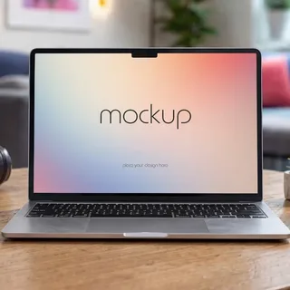
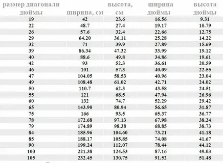
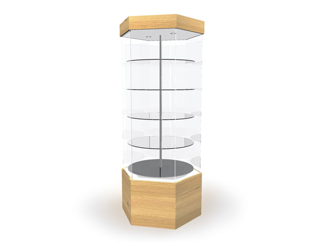

Адаптивность
Макет меняется под размер экрана без горизонтальной прокрутки.
Демонстрационный сайт, который подстраивается под экран смартфона, планшета, ноутбука и большого монитора. Чистый интерфейс, гибкая сетка и удобная навигация.

Сайт использует принципы адаптивной вёрстки: относительные размеры, CSS Grid, Flexbox и контрольные точки для разных ширин экрана.
Макет меняется под размер экрана без горизонтальной прокрутки.
Без внешних библиотек и тяжёлых изображений — всё работает локально.
HTML, CSS и JavaScript собраны в одном понятном файле.
Примеры блоков, которые можно использовать как основу для портфолио или учебного проекта.

Наглядное представление данных с удобной структурой и акцентами.

Карточки товаров, понятная навигация и интерфейс для касаний.
Вёрстка использует подход mobile-first и три media queries по заданию: 768, 1024 и 1440 пикселей. Шрифты и отступы масштабируются, а интерактивные элементы удобны для нажатия.
Сайт можно открыть в любом современном браузере. Для проверки изменяйте ширину окна или включите режим устройств в инструментах разработчика.
Раздел для контактной информации. Замените текст на свои данные — ссылки, почту или мессенджеры.
Email: hello@example.com
Telegram: @example